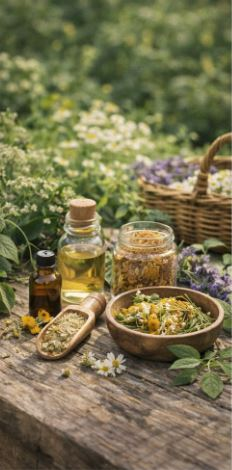
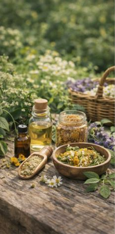

Përdorimi tradicional dhe modern.
Përdorimi i bimëve mjekësore ka një histori të gjatë që lidhet me qytetërimet e lashta. Egjiptianët, grekët, romakët dhe shumë kultura të tjera kanë dokumentuar përdorimin e bimëve për qëllime shëndetësore. Recetat tradicionale janë përcjellë brez pas brezi dhe kanë formuar bazën e mjekësisë popullore. Në ditët e sotme, përdorimi i bimëve mjekësore nuk kufizohet vetëm në traditë. Ato studiohen në laboratorë modernë ku analizohen përbërësit kimikë dhe efektet e tyre në organizëm. Ky kombinim i njohurive tradicionale me kërkimin shkencor krijon një qasje më të sigurt dhe më të kontrolluar. Produktet me bazë bimore gjenden në farmaci dhe dyqane të specializuara në forma të ndryshme: çajra, suplemente ushqimore, vajra esencialë dhe kremra. Megjithatë, përdorimi i tyre duhet të bëhet me kujdes dhe me këshillën e profesionistëve të shëndetit. E ardhmja e bimëve mjekësore lidhet ngushtë me kërkimin shkencor dhe ruajtjen e natyrës. Me zhvillimin e teknologjisë, studiuesit vazhdojnë të zbulojnë potenciale të reja, duke e bërë natyrën një burim të vazhdueshëm frymëzimi për mjekësinë moderne.